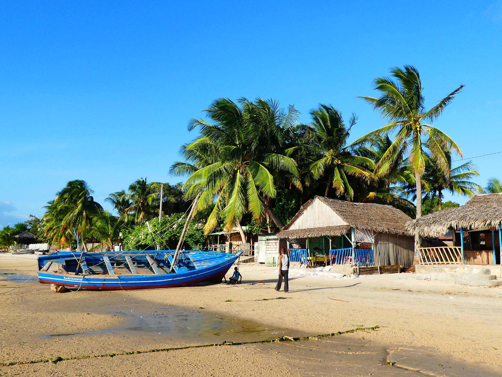

ANTSIRANANA
Antsiranana est une ville portuaire du nord de Madagascar. Elle se trouve dans la baie
d'Antsiranana, une vaste port naturel composé de plusieurs baies plus petites.
Au large, l'île conique Nosy lonjo, ou pain du sucre, est considérée comme sacrée
par les habitants. La longue plage de sable de Ramena se situe au nord-est. L'architecture
coloniale française de la ville se trouve dans l'ancien marché couvert et lesruines de
l'hôtel de la Marine
Le parc Montagne d'Ambre est un parc national situé à 38 km de la ville d'Antsiranana,
dans le Nord de Madagascar, dans la région DIANA.
Elle a une altitude de 800 pour culminer à 1475 km. Sa superficie est de 23 010 ha dont
18 200 ha pour le parc national er 4 810 ha pour la réserve spéciale de la forêt d'Ambre
Le parc abrite une forêt tropicale humide avec un taux d'endémisme très élevé dont des milliers
d'espèces de
bois précieux (Dalbergia chlorocarpa et le canarium madagascariensis). On y trouve plusieurs Oléacées
de
l'espèce Olea ambre sis, Olea capensis subsp. macrocarpa et Olea lancea, qui font de la montagne d'Ambre
un
creuset de diversités biologique.

La grande cascade chutant de 80m
La Montagne d'Ambre abrite une faune tropicale importante et dans ce parc il existe 77
espèces d'oiseaux et 49 espèces de reptiles, 11 espèces de caméléon et parmi lesquels le plus
petit caméléon de la planète, le BrookeSia et aussi une vingtaine d'espèces amphibiens.
La pluviométrie annuelle du parc est de 2978 mm en moyenne. Un écosystème aquatique constitué
par 05 lacs de cratère d'où partent les réseaux très denses des cours d'eau dans le domaine de
l'extrême Nord, si on ne par le que du lac Mahasarika qui approvisionne la ville d'Antsiranana
en eau. On dit aussi que le réseau hydrographique de la montagne d'Ambre peut entretenir jusqu'à
700 km² de rizière.
TSINGY ROUGE

Localisation
Le Tsingy rouge est un des sites touristiques de la partie Nord de Madagascar. Il se trouve à
l'entr"e du parc d'Analamerana, à environ 60 km au sud d'Antsiranana sur le plateau de sahafary,
près de la ville de Sadjoavato. L'accès est depuis la route RN6, à Saharenana.
Avec une superficie de 182 Ha
Géologie
Le Tsingy rouge est formé à partir de l'érosion du fleuve d'Irodo. Il est fait de grès, calcaire
et de magnes sculpté par l'érosin au pied du grand canyon et donne des couleurs de l'ocre rouge
au blanc et rose.
La plage RAMENA
Ramena est un village de pêcheur bordé d'une belle plage de sable, très longue, située entre le cap
d'Andranonomby et la pointe de l'Aigle, dans la baie de Diego Suarez. Un endroit sympa pour la
baignade et la pêche. Bon endroit pour les amateurs de surf, cette zone étant très ventée.

Plage Ramena Diego Suarez

la belle plage